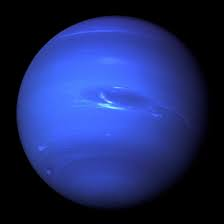

Our
Solar System
The Solar System is the gravitationally bound system of the Sun and the objects that orbit it. Of the bodies that orbit the Sun directly, the largest are the four gas and ice giants and the four terrestrial planets, followed by an unknown number of dwarf planets and innumerable small Solar System bodies. Of the bodies that orbit the Sun indirectly—the natural satellites—two are larger than Mercury and one is nearly as large.[c] The Solar System formed 4.6 billion years ago from the gravitational collapse of a giant interstellar molecular cloud. The vast majority of the system's mass is in the Sun, with the majority of the remaining mass contained in Jupiter. The four inner system planets – Mercury, Venus, Earth and Mars – are terrestrial planets, being composed primarily of rock and metal. The four giant planets of the outer system are substantially more massive than the terrestrials. The two largest planets, Jupiter and Saturn, are gas giants, being composed mainly of hydrogen and helium; the next two, Uranus and Neptune, are ice giants, being composed mostly of substances with relatively high melting points compared with hydrogen and helium, called volatiles, such as water, ammonia and methane. All eight have nearly circular orbits that lie close to the plain of the Earth's orbit, called the ecliptic.
